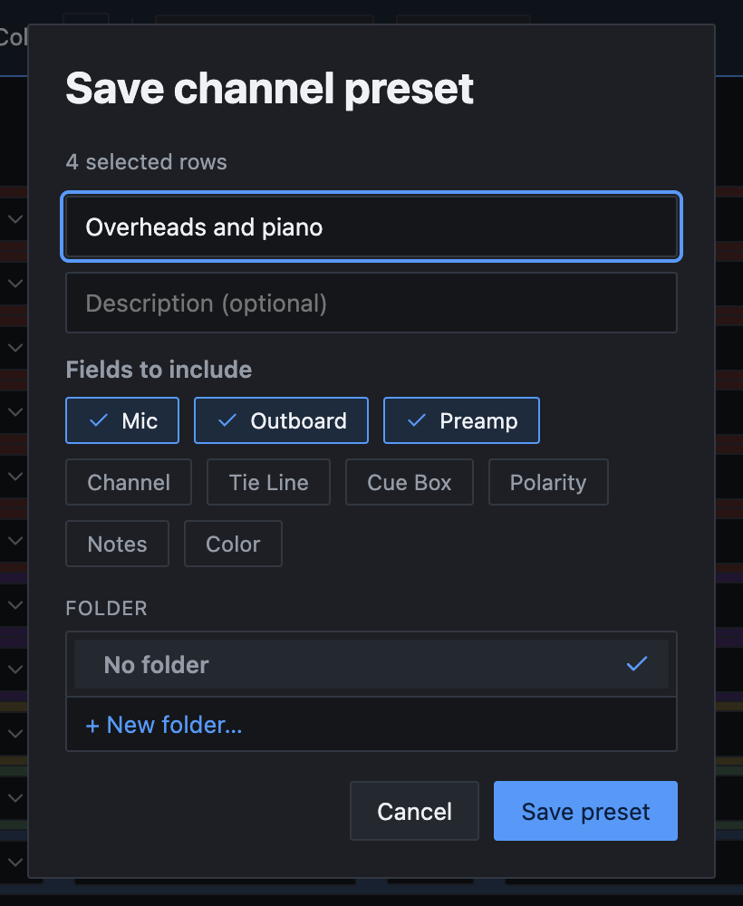
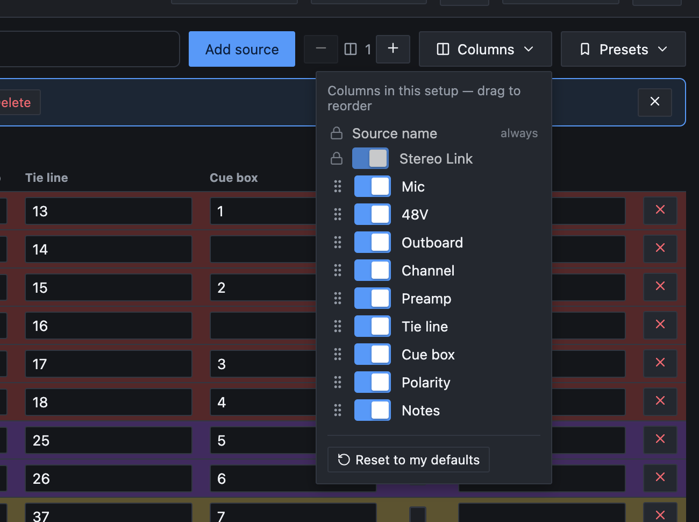
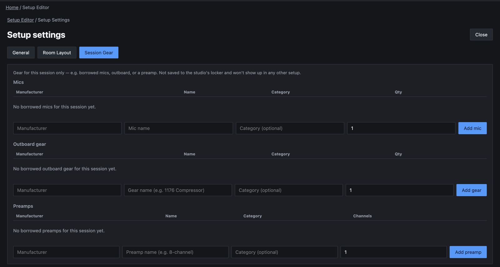
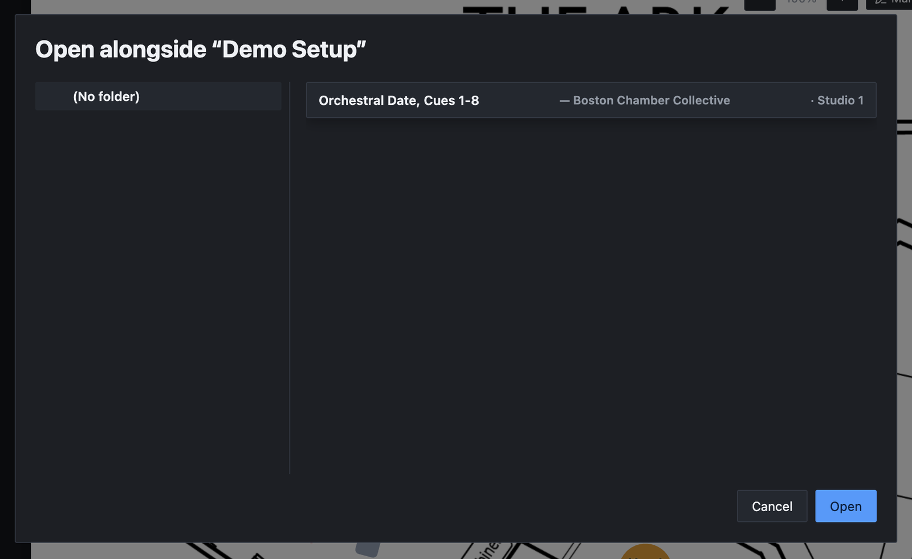
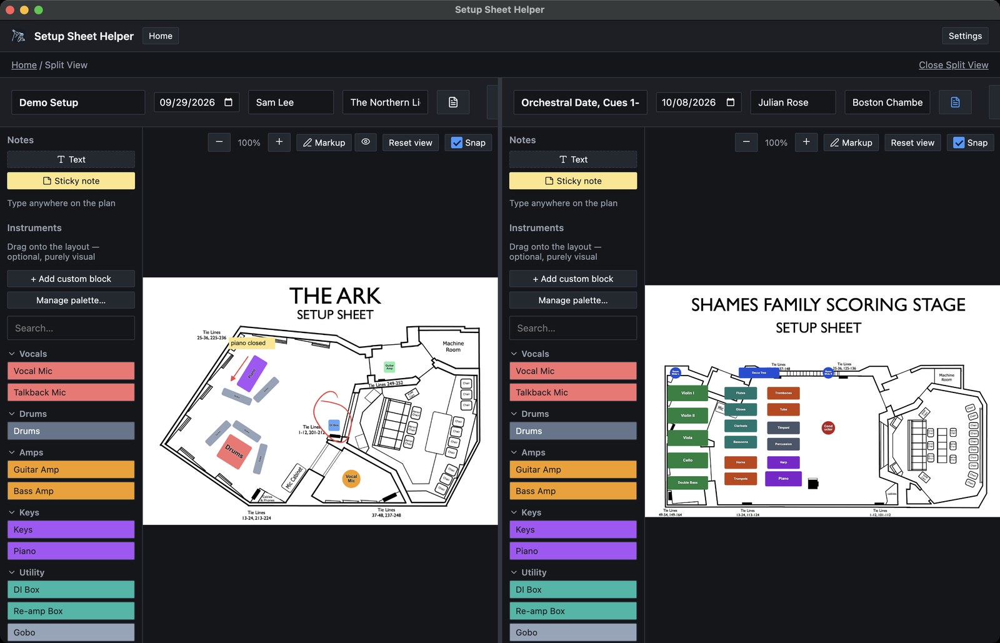

Part 7
Working faster
None of these features are needed to make a setup sheet. Each one saves time once you're making them often. Read the sections that match how you work and skip the rest.
Channel presets
A channel preset is a group of rows saved for reuse, such as your usual drum kit with its mics and preamps. Presets aren't tied to a studio, so one you save in one room can be loaded in any other.
Saving a preset
-
Select the rows
Click the left edge of the first row, then Shift-click the last. Part 2 covers selecting rows.
-
Click Save as preset
It's in the blue selection bar above the sheet.
-
Fill in the dialog
Give the preset a name, and a description if you like. Under Fields to include, choose what the preset remembers. Mic, Outboard and Preamp start on. Channel, Tie Line, Cue Box, Polarity, Notes and Color start off. Source names are always saved. Pick a folder if you want, then click Save preset.

Presets keep one outboard unit per row. If a row uses more than one outboard column, only the first is saved.
Loading a preset
Click Presets in the toolbar and choose Load preset…. Browse the folders or type in Search presets, then double-click a preset or select it and click Load.
The preset's rows are added to the end of the sheet. Nothing already there is replaced.
Gear is matched by name against the studio you're in. If this studio doesn't have a model the preset names, that cell is left empty and shows a Preset expected: badge with the missing model's name, so you know what to swap in.
Managing presets
Choose Presets → Manage presets…, or Manage channel presets… in Settings → General. You can file presets in folders, drag them into order, change a name or description with Edit, and delete one or several at once. It works like the other managers in Part 8.
Studio templates
If you track the same kind of session in the same room again and again, save the input list as a starting point. Choose File → Save as Studio… or press ⌘⇧S. Give it a name, pick a folder if you like, and click Save studio.
Despite the name, this doesn't make a new room with its own gear. It saves the row list for the room you're in. What's kept and what's cleared:
- Kept: the source names in their order, which columns are shown and in what order, the number of outboard columns, and your export column choices.
- Cleared: mics, 48V, outboard, preamps, channels, tie lines, cue boxes, polarity, notes, row colors and stereo links. The floor plan isn't saved either.
The template appears under New Setup From Studio Template on the home screen as a card labeled Gear list. Click it and a new setup opens straight away with those rows, named after the template and dated today. Rename it in the header.
A template belongs to the studio of the setup you saved it from. Deleting that studio deletes its templates too.
Stereo pairs
Link two rows into a stereo pair and they stay in step: change the mic on one and the other follows.
Linking two rows
Move the mouse over the line between two neighboring rows, at the left edge of the sheet. A link icon appears. Click it, and a curly brace joins the two rows. The brace prints in the PDF too.
When you link, the lower row is filled in from the upper one:
- Mic and preamp, if the lower row's cell is empty and the studio has at least 2 of that mic (or 2 channels of that preamp).
- 48V, always.
- Outboard, if the lower row has none of its own.
While they're linked
- Changes to the mic, preamp, outboard, 48V or polarity copy to the other row.
- Channel and tie line follow an N and N+1 pattern. Type 9 in the top row's channel and the bottom row gets 10.
- A cue box with a plain number follows the same pattern. A text cue such as 1-2 is copied as it is.
- Dragging either row moves both.
Unlinking
Click the link icon between the two rows again. A row can only be in one pair, so linking it to a different neighbor breaks its old link.
Never use pairs? Hide the Stereo Link column in the Columns menu (below).
Columns
Click Columns in the toolbar to choose what this setup shows. Each column has a switch, and you drag a column up or down the list to move it across the sheet. Source name is always shown and always first. Stereo Link stays at the far left, but you can hide it.

- Each setup keeps its own choices. Templates and duplicates take them along.
- Reset to my defaults brings back the columns set in Settings → Columns, which is also what new setups start with. Part 10 covers it.
- Column changes can't be undone with ⌘Z. Switch a column back on to undo hiding it.
- A hidden column starts switched off when you export. Part 3 explains the export column choices.
More than one outboard column
For a chain such as a compressor into an EQ, give each row more outboard slots. Use the − and + buttons beside the outboard column count, just left of Columns. + adds a slot to every row. − removes the last slot and clears whatever was in it on every row (⌘Z brings it back). There's always at least one.
In the PDF, all outboard slots for a row print together in one cell.
Session gear
For gear that's in the room for this session only, such as a mic the artist brought, add it to the setup instead of the studio. Press ⌘G (or click Setup settings) and choose the Session Gear tab.
There are three sections: Mics, Outboard gear and Preamps. Fill in the manufacturer, the model, an optional category and a quantity (channels, for a preamp). Then click Add mic, Add gear or Add preamp. If you leave the manufacturer empty, the app fills it in when it recognizes the model.

Session gear shows up in the pickers right away, under This Session. It isn't added to the studio and doesn't appear in any other setup. Use Remove to take an item off the list. Press Esc or click Close to get back to the sheet.
For gear you bring to every session, use the Personal Gear Locker tab in Settings instead. It's offered in every setup in every studio.
Split View
Split View puts two setups side by side, such as today's session and last week's in the same room, or two rooms on one project.
-
Click Split View
It's in the editor toolbar. The dialog lists your setups by folder, with the studio each belongs to. They can be from any studio.
-
Pick the second setup
Choose a folder on the left or type in Search setups, select a setup, and click Open.

Each side is a complete editor with its own header, Table and Layout Mode, gear, undo history and saving. Keyboard shortcuts act on the side you clicked last. Drag the divider between them to change how much room each gets; the app remembers where you leave it.

When you're done, click Close Split View at the top right. Both sides are saved, and you're left with the setup on the left.
Split View isn't available while the Layout window is popped out (below), and you can't split again from inside Split View.
Pop-out Layout window
With a second display, you can keep the setup sheet on one screen and the floor plan on the other. Click the pop-out button beside Layout Mode in the toolbar (a square with an arrow). Layout Mode opens in its own window. Drag it to the other display.
The window has the palette, the floor plan and its own save status. Layout shortcuts work there, along with undo, duplicate and delete. Close it and your changes are saved.
While it's open:
- The main window stays in Table Mode, and its Layout Mode button is grayed out.
- Split View is turned off.
- Clicking the pop-out button again brings the window to the front.
There's only one Layout window at a time. Pop out a different setup and the window switches to it, saving the first setup's changes. The window remembers its size and position for next time.
When you export from the main window, the app gets the floor plan from the Layout window. If that window doesn't answer within 3 seconds, the PDF is saved without its room layout page and the message in the toolbar says the page was skipped. If you were exporting only the room layout, nothing is saved. Bring the Layout window to the front and export again.
Duplicating a setup
To start from a setup you've already built, copy it.
-
Open Manage setups
On the home screen, click Manage setups beside Saved Setups.
-
Click Duplicate
Click Duplicate on the setup you want to copy.
-
Name the copy
The Duplicate setup dialog starts with the name Copy of followed by the original's name, and the same date, engineer, artist and folder. Change what you need and click Duplicate.
The copy has every row with its gear and numbers, the same columns, the session notes, and the floor plan with its blocks, notes and markup. If the original had its own room layout, the copy gets its own copy of that file. From then on the two setups are separate, and changing one never touches the other.